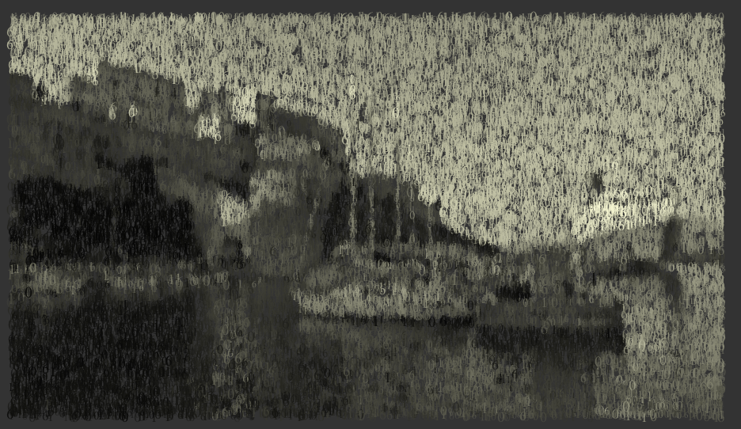
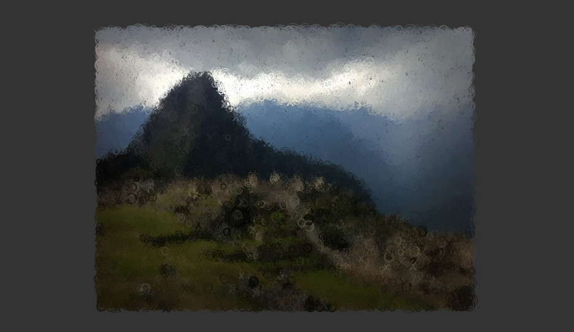
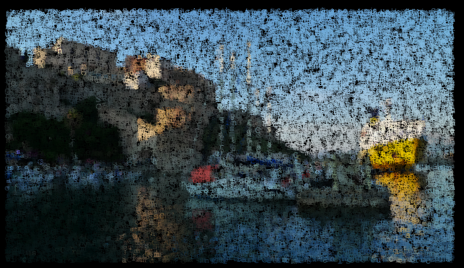

Fri, 17 Jun 2011 05:39:00 · textify · photography · design · artist · geek
turn your images into text recently tried out



Turn Your Images Into Text
Recently tried out Textify, a pretty neat tool that allows you to creatively convert your images into a text-based mosaic. The web-based app runs smoothly simply by dragging and dropping your images onto your browser; this function works only on Chrome and Firefox 4, not Safari (yet?).
Once you have your image on, you can easily customize whatever parameter you like through the collapsible control panel on the right. It’s easy to use, and it’s hard not to like this geeky tool. When you’re happy with your piece, saving your image is mere a click away. Voila!